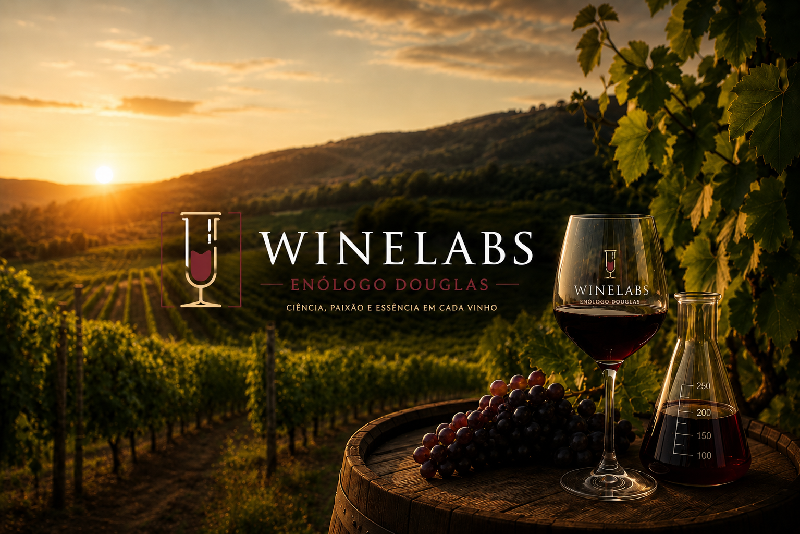
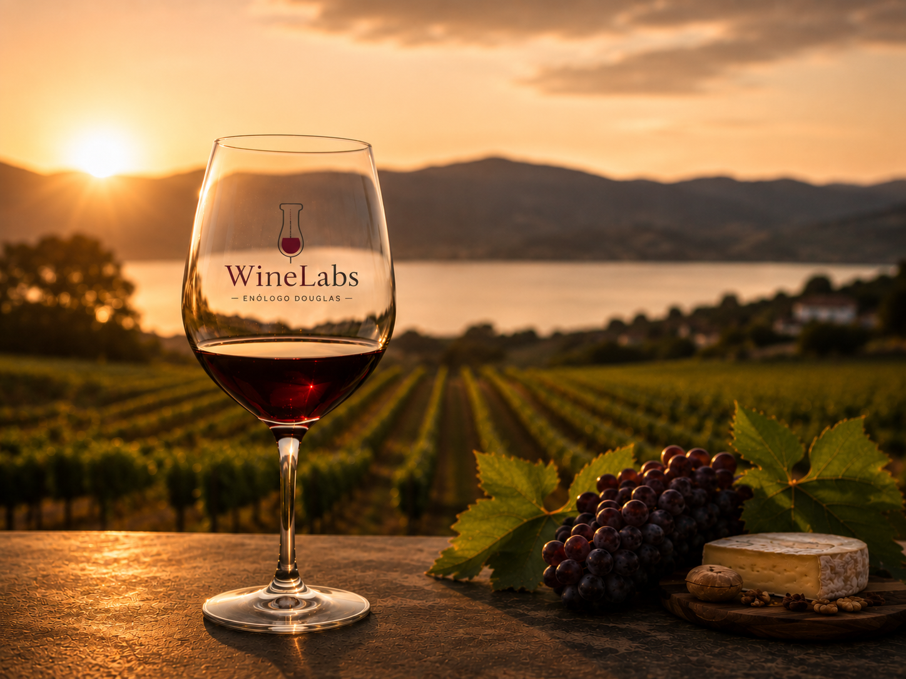

Consultoria empresarial
Diagnóstico, estratégia e acompanhamento para marcas e negócios do setor vitivinícola evoluírem com método, dados e identidade clara — do planejamento à execução.
Saiba maisDesign de produtos
Criação e repaginação de rótulos, embalagens e linhas de produtos com foco em acessibilidade, inovação e posicionamento de mercado para o universo do vinho.
Ver projetos

Consultoria enogastronômica
Degustações guiadas, harmonizações e experiências para eventos, vinícolas e restaurantes — traduzindo o vinho para diferentes públicos sem perder qualidade.
Conheça a WinelabsIdentidade de marca
Construção de marcas, narrativas e materiais visuais para vinícolas e projetos do vinho comunicarem sua essência com consistência, elegância e clareza.
Ver projetos